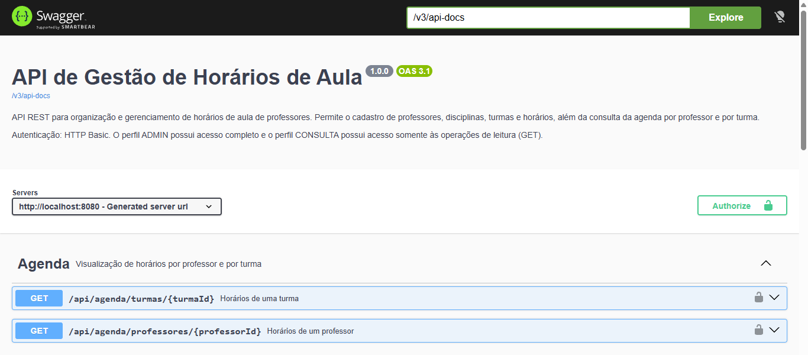
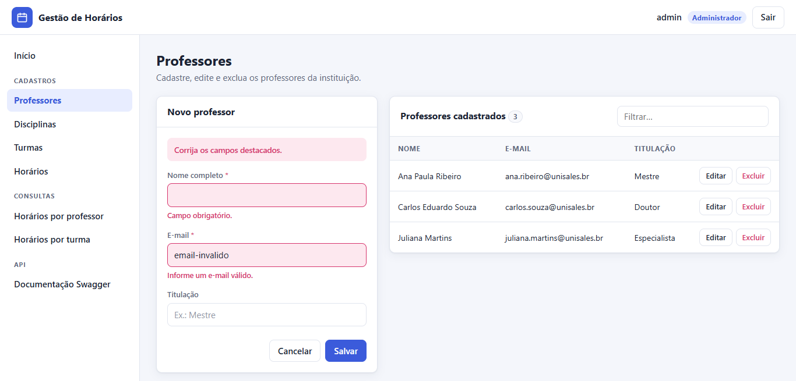
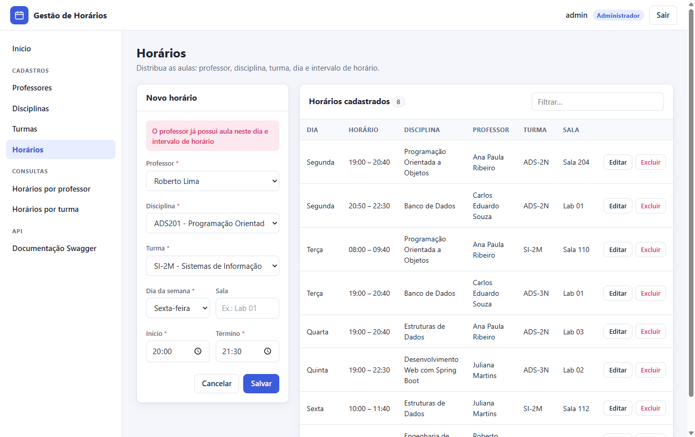
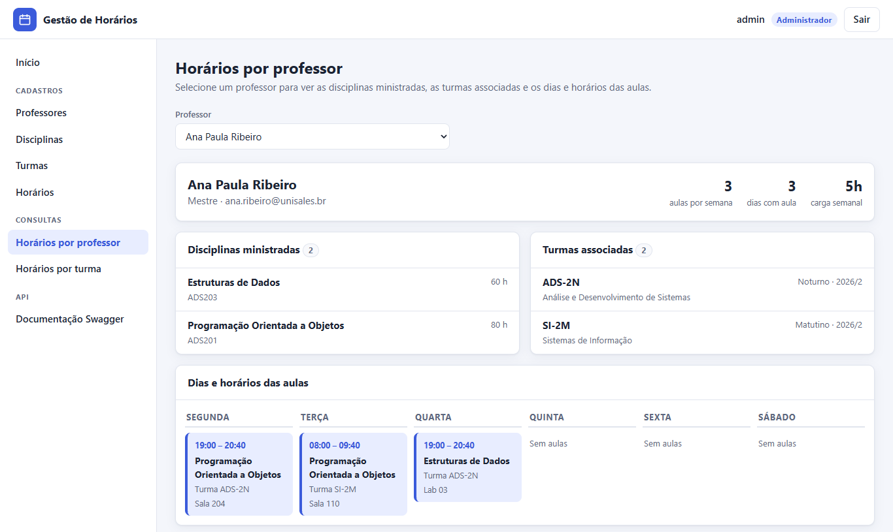
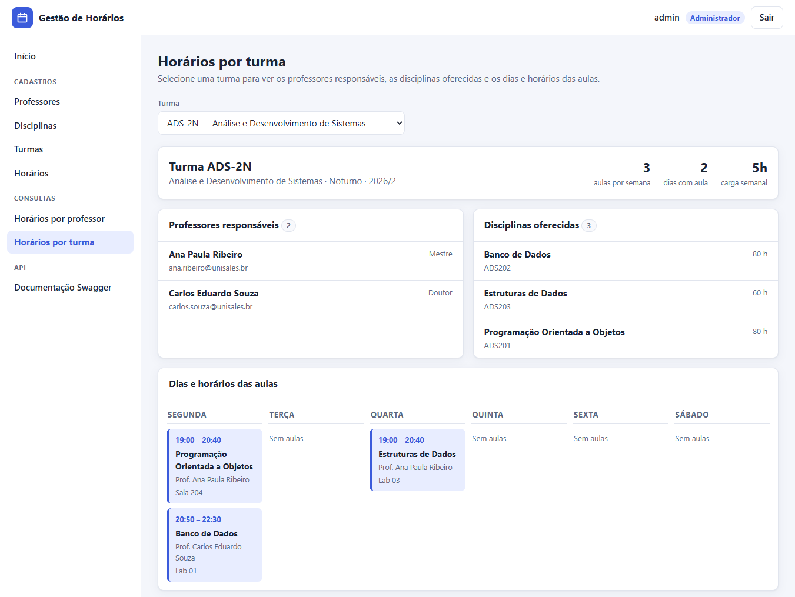

1 Graduando(a) do Curso de Nome do Curso do Centro Universitário Salesiano. E-mail: e-mail do aluno.
2 Professor(a) do Centro Universitário Salesiano – Unisales. E-mail: e-mail do professor.
Nome Completo do Aluno1
Nome Completo do Professor2
RESUMO
A organização dos horários de aula de uma instituição de ensino relaciona professores, disciplinas e turmas e, quando feita em planilhas ou documentos dispersos, está sujeita a choques de agenda e a dificuldades de consulta. Este artigo apresenta o desenvolvimento de um sistema web para o cadastro e o gerenciamento de horários de aula de professores, construído em Java com o framework Spring Boot. O sistema expõe uma API REST documentada com Swagger, protegida por autenticação básica com usuário e senha, e persiste os dados por meio de mapeamento objeto-relacional com JPA e Hibernate. Sobre essa API foi construída uma interface web que permite cadastrar, editar, excluir e listar professores, disciplinas, turmas e horários, com validação dos formulários, e consultar a grade semanal de um professor ou de uma turma. O projeto segue o padrão MVC em camadas e foi versionado com Git em repositório público no GitHub. Os testes automatizados e a verificação das telas indicaram que o sistema atende aos requisitos propostos.
Palavras-chave: Spring Boot. API REST. Horários de aula. Swagger. Mapeamento objeto-relacional.
ABSTRACT
Organizing class schedules in an educational institution involves relating teachers, courses and classes and, when done with spreadsheets or scattered documents, is prone to scheduling conflicts and hard to query. This article presents the development of a web system for registering and managing teachers' class schedules, built in Java with the Spring Boot framework. The system exposes a REST API documented with Swagger, protected by basic username and password authentication, and persists data through object-relational mapping with JPA and Hibernate. On top of this API, a web interface was built to create, edit, delete and list teachers, courses, classes and schedules, with form validation, and to view the weekly timetable of a teacher or a class. The project follows the layered MVC pattern and was versioned with Git in a public GitHub repository. Automated tests and interface checks showed that the system meets the proposed requirements.
Keywords: Spring Boot. REST API. Class schedules. Swagger. Object-relational mapping.
A elaboração da grade de horários é uma tarefa recorrente na rotina acadêmica. A cada período letivo, a coordenação precisa combinar professores, disciplinas e turmas em dias e intervalos de tempo, garantindo que nenhum professor seja alocado em duas turmas ao mesmo tempo e que nenhuma turma tenha duas aulas simultâneas. Quando esse trabalho é feito em planilhas ou documentos isolados, os choques de horário só são percebidos depois de publicados, e perguntas simples, como "em quais dias o professor leciona?" ou "quais professores atendem esta turma?", exigem cruzar várias fontes manualmente.
Diante desse problema, o objetivo deste trabalho foi desenvolver um aplicativo web para organização e gerenciamento de horários de aula de professores. Os requisitos definidos foram: telas de cadastro, edição, exclusão e listagem de professores, disciplinas, turmas e horários, com validação básica dos formulários; visualização dos horários por professor, exibindo disciplinas ministradas, turmas associadas e dias e horários das aulas; e visualização dos horários por turma, exibindo professores responsáveis, disciplinas oferecidas e dias e horários das aulas. Como requisitos técnicos, o sistema deveria ser desenvolvido em Java com Spring Boot, ter a API documentada com Swagger, possuir autenticação básica por usuário e senha, persistir os dados com mapeamento objeto-relacional (ORM) e ter o código-fonte versionado em repositório público no GitHub.
O estilo arquitetural REST (Representational State Transfer) organiza um sistema distribuído em torno de recursos identificados por endereços e manipulados por operações padronizadas do protocolo HTTP, em uma comunicação sem estado entre cliente e servidor (Fielding, 2000). Nesse modelo, cada entidade do domínio, como professores ou turmas, torna-se um recurso acessado pelos métodos GET, POST, PUT e DELETE, e o resultado de cada operação é comunicado por códigos de status HTTP.
O padrão MVC (Model-View-Controller) separa a aplicação em modelo, visão e controlador, para que regras de negócio, apresentação e tratamento das requisições evoluam de forma independente, e costuma ser complementado por camadas de serviço e de repositório (Fowler, 2002).
O Spring Boot simplifica a criação de aplicações Spring ao oferecer configuração automática, servidor web embutido e dependências agrupadas por funcionalidade (Walls, 2022). Para a persistência, a especificação JPA (Jakarta Persistence API), implementada pelo Hibernate, mapeia classes Java para tabelas relacionais, permitindo manipular os dados como objetos sem escrever SQL para as operações comuns (Bauer; King; Gregory, 2016).
A especificação OpenAPI descreve APIs HTTP em um formato legível por máquinas, a partir do qual ferramentas como o Swagger UI geram documentação navegável e permitem testar os endpoints (OpenAPI Initiative, 2024). Já o esquema de autenticação HTTP Basic transmite usuário e senha codificados no cabeçalho de cada requisição, devendo ser usado sobre conexões cifradas em produção (Reschke, 2015).
O sistema foi construído de forma incremental, com entregas parciais que acrescentavam funcionalidades sobre uma base já testada, abordagem recomendada quando os requisitos podem ser divididos em partes independentes (Sommerville, 2018). Cada incremento foi registrado em um commit do Git, o que permite acompanhar a evolução do projeto pelo histórico do repositório (Chacon; Straub, 2014).
Foram utilizados Java 17, Spring Boot 4.1 (Web MVC, Data JPA, Validation e Security), banco H2, springdoc-openapi para o Swagger, Maven e Visual Studio Code. A interface web foi escrita em HTML, CSS e JavaScript e é servida pelo próprio Spring Boot. O código-fonte está disponível no repositório público https://github.com/Gabrielgbs23/api-horarios.
A verificação foi feita em três níveis: testes automatizados de integração com JUnit e MockMvc, executados a cada compilação; um roteiro de 107 verificações das respostas da API, cobrindo cadastros, validações, conflitos, consultas e permissões; e um roteiro de 65 verificações das telas em um navegador, que preenche formulários, confere mensagens de validação e consulta as agendas.
O backend foi dividido em pacotes com responsabilidades distintas: model (entidades JPA), repository (acesso ao banco), service (regras de negócio), controller (endpoints REST), dto (entrada e saída com validação), exception (tratamento de erros) e config (segurança, documentação e dados iniciais). A interface web atua como camada de visão e se comunica com o backend apenas pela API. O Quadro 1 resume o modelo de dados.
Quadro 1 – Entidades do modelo de dados
| Entidade | Atributos e relacionamentos |
|---|---|
| Professor | nome, e-mail (único) e titulação |
| Disciplina | código (único), nome e carga horária |
| Turma | nome (único), curso, ano letivo e turno |
| Horário | dia da semana, hora de início, hora de término e sala; referencia um professor, uma disciplina e uma turma (relacionamentos muitos-para-um) |
| Usuário | nome de usuário, senha criptografada com BCrypt e perfil (ADMIN ou CONSULTA) |
Fonte: elaboração própria (2026).
Cada entidade possui endpoints para listar, buscar, cadastrar, atualizar e excluir, e duas rotas atendem às consultas: /api/agenda/professores/{id} retorna as disciplinas ministradas, as turmas associadas e as aulas do professor, e /api/agenda/turmas/{id} retorna os professores responsáveis, as disciplinas oferecidas e as aulas da turma, sempre ordenadas por dia e horário. Os dados recebidos são validados com anotações do Bean Validation, e os erros retornam em formato padronizado, indicando o campo inválido.
As regras de negócio ficam na camada de serviço. Ao salvar um horário, o sistema verifica se a hora de término é posterior à de início e consulta o banco em busca de aulas do mesmo professor ou da mesma turma, no mesmo dia, cujo intervalo se sobreponha ao novo, isto é, que comecem antes do término informado e terminem depois do início informado. Também impede e-mails, códigos e nomes de turma duplicados e bloqueia a exclusão de professores, disciplinas e turmas que ainda possuam horários vinculados. A Figura 1 mostra a documentação gerada no Swagger UI.
Figura 1 – Documentação da API no Swagger UI

Fonte: elaboração própria (2026).
A segurança foi implementada com Spring Security usando HTTP Basic. Os usuários ficam no banco com senhas criptografadas, e cada requisição é autenticada de forma independente, sem sessão no servidor. O perfil administrador pode ler e alterar dados, e o perfil de consulta pode apenas ler. Requisições sem credenciais válidas recebem o código 401, e alterações tentadas pelo perfil de consulta, o código 403; somente a documentação e os arquivos da interface são públicos.
A interface web começa por uma tela de login e oferece um menu com os cadastros e as consultas. Cada tela de cadastro reúne um formulário de inclusão e edição e uma lista com filtro, botões de edição e exclusão com confirmação. Os formulários validam campos obrigatórios, formato de e-mail, limites de tamanho, carga horária entre 1 e 400 horas e ano letivo no formato AAAA ou AAAA/S, como ilustra a Figura 2. Quando a API recusa uma operação, a mensagem retornada é exibida no próprio formulário, como no choque de horário mostrado na Figura 3.
Figura 2 – Validação do formulário de cadastro de professor

Fonte: elaboração própria (2026).
Figura 3 – Cadastro de horários com choque de horário detectado

Fonte: elaboração própria (2026).
Nas consultas, o usuário seleciona um professor ou uma turma em uma lista. A tela de horários por professor (Figura 4) exibe as disciplinas ministradas, as turmas associadas e uma grade semanal com os dias e horários das aulas, além do total de aulas e da carga semanal. A tela de horários por turma (Figura 5) exibe os professores responsáveis, as disciplinas oferecidas e a grade semanal da turma. O perfil de consulta acessa as listas e as agendas, mas não vê os formulários e os botões de alteração.
Figura 4 – Visualização de horários por professor

Fonte: elaboração própria (2026).
Figura 5 – Visualização de horários por turma

Fonte: elaboração própria (2026).
Os nove testes de integração cobrem autenticação, permissões, validação e o fluxo completo de cadastro de um horário, com detecção de conflito, consultas de agenda e restrições de exclusão; com os roteiros da API e das telas, todos os cenários foram atendidos sem falhas. O Quadro 2 resume a evolução do projeto a partir dos commits do repositório.
Quadro 2 – Evolução do projeto registrada no GitHub
| Etapa | Incremento | Conteúdo dos commits |
|---|---|---|
| 1 | Estrutura e persistência | Projeto Spring Boot, entidades JPA e repositórios |
| 2 | API REST | DTOs com validação, tratamento de erros, serviços e endpoints |
| 3 | Segurança e documentação | HTTP Basic com perfis, Swagger e dados iniciais |
| 4 | Testes da API | Testes de integração e README com instruções de uso |
| 5 | Interface web | Login, telas de cadastro e consultas de horários |
| 6 | Revisão final | Testes da interface e README com capturas de tela |
Fonte: elaboração própria (2026), a partir do histórico do repositório.
O sistema desenvolvido atende aos requisitos propostos: permite cadastrar, editar, excluir e listar professores, disciplinas, turmas e horários com validação dos formulários; apresenta os horários por professor e por turma; foi construído em Java com Spring Boot; tem a API documentada com Swagger; exige autenticação por usuário e senha; persiste os dados com JPA e Hibernate; e está versionado em repositório público no GitHub. Além do que foi solicitado, a detecção automática de choques de horário e o bloqueio de exclusões com vínculos evitam os erros mais comuns da montagem manual da grade.
A separação em camadas facilitou a evolução incremental: a API foi concluída e testada antes da interface web, que passou a consumi-la sem exigir mudanças nas regras de negócio. Como limitações, o banco H2 é adequado ao desenvolvimento, mas um ambiente de produção pede um gerenciador como o PostgreSQL, e a autenticação básica deve ser usada com HTTPS. Como trabalhos futuros, sugerem-se a separação dos horários por período letivo, a exportação da grade em PDF e a sugestão automática de horários livres.
O código-fonte completo, com instruções de execução, está disponível em: https://github.com/Gabrielgbs23/api-horarios.
BAUER, Christian; KING, Gavin; GREGORY, Gary. Java persistence with Hibernate. 2. ed. Shelter Island: Manning, 2016.
CHACON, Scott; STRAUB, Ben. Pro Git. 2. ed. New York: Apress, 2014. Disponível em: https://git-scm.com/book/pt-br/v2. Acesso em: 24 nov. 2026.
FIELDING, Roy Thomas. Architectural styles and the design of network-based software architectures. 2000. Tese (Doutorado em Information and Computer Science) – University of California, Irvine, 2000.
FOWLER, Martin. Patterns of enterprise application architecture. Boston: Addison-Wesley, 2002.
OPENAPI INITIATIVE. OpenAPI specification: version 3.1.1. [S. l.]: OpenAPI Initiative, 2024. Disponível em: https://spec.openapis.org/oas/v3.1.1.html. Acesso em: 24 nov. 2026.
RESCHKE, Julian. The 'Basic' HTTP authentication scheme: RFC 7617. [S. l.]: Internet Engineering Task Force, 2015. Disponível em: https://www.rfc-editor.org/rfc/rfc7617. Acesso em: 24 nov. 2026.
SOMMERVILLE, Ian. Engenharia de software. 10. ed. São Paulo: Pearson Education do Brasil, 2018.
WALLS, Craig. Spring in action. 6. ed. Shelter Island: Manning, 2022.